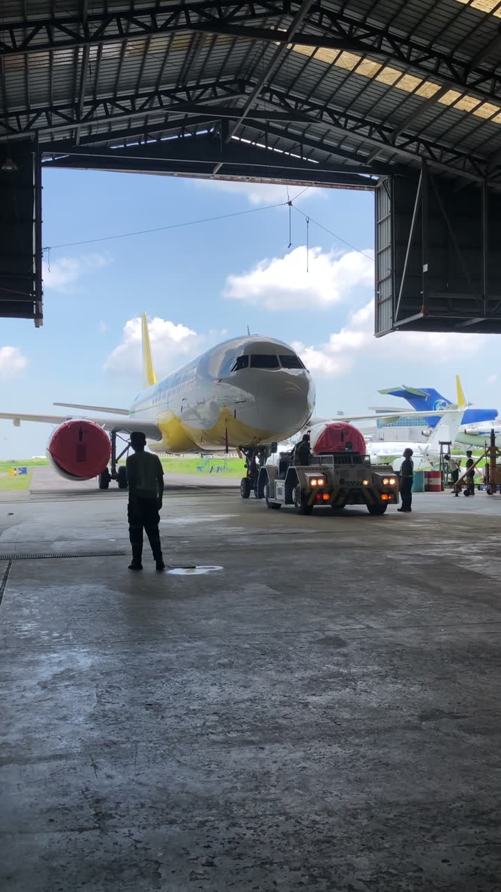

Internships
Line and base maintenance at Dornier Technology in 2023, and flight school operations at Alpha Aviation Group.

Dornier Technology Inc.
Fifteen-plus pre- and post-flight inspections across A320, ATR-72 and B737 during line maintenance, then an A320 engine overhaul in base maintenance, including a torque-controlled fastener installation on a wing leading-edge de-icing boot under a licensed mechanic's sign-off. The last rotation was technical records: reviewing NRC, service-bulletin and airworthiness-directive compliance.
Also where I learned to safety-wire properly. It is a small, unglamorous detail, but it tells you whether a job was done by someone paying attention.


Alpha Aviation Group Philippines


Flight simulation sessions on a Cessna 172 and an A320, trainer aircraft external inspection and cockpit prep, and one supervised engine run-up and taxi on the Cessna, working through the function checks and fault indications that go with it.
A fault indication reads differently once you have sat in the seat that shows it to you.
Questions about the hangar work?
I'm happy to talk through any of it, from a pre-flight walkaround to a records review.
+81-70-3276-7554Tsukuba, Ibaraki, Japan
+63-933-665-1535Angeles, Pampanga, Philippines